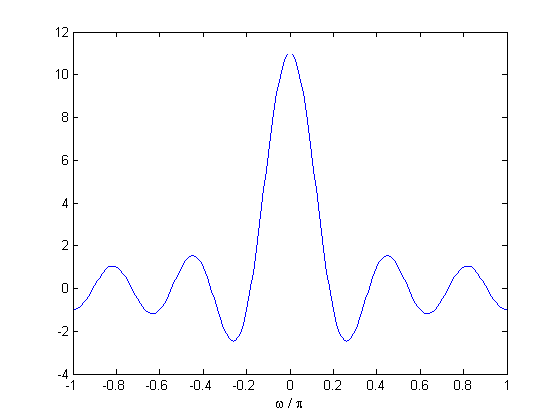

EHB372E Week-7 : Filter Design
We discuss filter design this week. Although there already exist built-in Matlab commands for designing filters (for instance 'firpm' - type 'help firpm' to see other related commands), we will discuss some simple methods.
Contents
Rect Filter
Possibly the simplest lowpass filter consists of a sequence of ones. Specifically, consider the filter whose $z$-transform is given as $$ H(z) = \sum_{k=-K}^K z^{-k}.$$ Evaluating this $z$-transform on $z = e^{j\omega}$, we obtain the DTFT. After some manipulations, we find that the DTFT may also be written as $$ H(e^{j\omega}) = \frac{\sin\bigl(\left(K+\frac{1}{2} \right) \omega \bigr)}{\sin\bigl(\frac{\omega}{2}\bigr)}.$$ This is called the 'digital sinc' function. Let us sketch this to gain some insight.
K = 5;
w = pi*(-1:0.01:1);
H = sin( (K+0.5) * w ) ./ ( sin( 0.5 * w ) );
plot(w/pi,H); xlabel('\omega / \pi');
 The peak of $|H(e^{j\omega})|$ occurs at $\omega = 0$ and is equal to $2K+1$ (why?). The first zeros occur at $\pm \omega_0$, where $\omega_0 = \pi/(K+1/2)$. We will call the interval $[-\omega_0, \omega_0]$ the mainlobe of the filter. We also observe that $|H(e^{j\omega})|$ decays as we move away from the origin. Therefore $h$ may be regarded as a lowpass filter. This lowpass filter is controlled by a single parameter, namely $K$, the filter length. Observe that the mainlobe shrinks with increasing $K$. To see this more concretely, let us sketch the DTFT for $K= 7$ too.
K = 7; G = sin( (K+0.5) * w ) ./ ( sin( 0.5 * w ) ); hold on; plot(w/pi,G,'r'); legend('K=5','K=7');
If we normalize the filters so that the maximum value of the frequency response is unity, we can compare the more easily.
K = 5; H = (2*K+1)^(-1) * sin( (K+0.5) * w ) ./ ( sin( 0.5 * w ) ); K = 7; G = (2*K+1)^(-1) * sin( (K+0.5) * w ) ./ ( sin( 0.5 * w ) ); figure; plot(w/pi,H); hold on; plot(w/pi,G,'r'); xlabel(' \omega / \pi '); legend('K=5','K=7');
If we want to use this filter for processing a continuous-time signal, sampled at the frequency $f_s$, we need to convert the units of the frequency axis from radians/sample to Hz. To do that, remember that $f_s/2$ Hz corresponds to $\pi$ rad/sample. Thus the mainlobe of a rectangle filter of length $K$ is $[-f_0, f_0]$ Hz, where $f_0 = f_s/(2 K +1)$. Let us now convert the unit of the frequency axis to Hz, for $f_s = 16$ Khz.
fs = 16000; % this is the sampling frequency f = ( 0.5 * fs/ pi ) * w; figure; plot(f,H); hold on; plot(f,G,'r'); xlabel('Frequency (Hz)'); legend('K=5','K=7');
Bandpass/Highpass Filter From a Lowpass Filter via Modulation
We saw that 'rect' filter provides a simple lowpass filter. If we need a bandpass or highpass filter, we can shift the frequency response of the filter in the frequency domain via modulation. That is, suppose $h(k)$ is a given filter and $g(k) = e^{-j\omega_0 k}\,h(k)$, where $\omega_0$ is the modulation frequency. Then, the frequency responses of $h$ and $g$ are related as, $$ G(e^{j\omega}) = H(e^{j(\omega - \omega_0}).$$ It follows that if $g(k) = \cos(\omega_0 k)\,h(k)$, then, $$ G(e^{j\omega}) = \frac{1}{2} \bigl( H(e^{j(\omega - \omega_0}) + H(e^{j(\omega + \omega_0}) \bigr).$$ Note that the bandwidth of the filter is not affected by moduation. Therefore, to obtain a bandpass filter with center frequency $\omega_0$ and mainlobe width $M$ rad/sample, we can do as follows.
w0 = 0.3*pi; % this is the center frequency of the bandpass filter M = 0.2*pi; % this is the desired mainlobe width % w0 and M constitute the desired characteristics of the filter K = round( 2*pi/M - 1/2) % solve for the filter length that comes closest to the given mainlobe width k = -K:K; g = cos( w0 * k ) / (2 * K + 1 ); % the filter [G,w] = freqz(g,512); % use fft or freqz to view the frequency response figure; plot(w/pi,abs(G)); xlabel('\omega / \pi');
K =
10
Note that the filter is of length $ 2K + 1 $ samples. If a wider mainlobe is sufficient, a shorter filter could be used (why?).
To obtain a highpass filter with the same mainlobe, we simply set $\omega_0 = \pi$.
w0 = pi; % this is the center frequency of the bandpass filter g = cos( w0 * k ) / (2 * K + 1 ); % the filter nfft = 512; % number of points in the DFT G = fft(g,nfft); w = ( 0 : (nfft-1) ) * 2 * pi / nfft; figure; plot(w/pi,abs(G)); xlabel('\omega / \pi');
If we wish to view the frequency response centered around $ \omega = 0$, we can use 'fftshift'. But we should be careful with 'w'.
w = ( -(nfft/2-1) : nfft/2 ) * 2 * pi / nfft;
plot( w / pi , fftshift( abs(G) ) );
xlabel('\omega / \pi');
Bandstop Filter Design
So far we discussed filters that pass a band of frequencies. Suppose now that we are interested in stopping a narrowband. Recall that if the filter is symmetric, i.e., linear phase, the frequency response is a real-valued function. Suppose now that $H(e^{j\omega})$ is a bandpass filter with a real frequency response and the maximum value of the frequency response is achieved at $\pm \omega_0$ with $H(e^{j\omega_0})= 1$. In this case, the filter with frequency response $G(e^{j\omega})= 1 - H(e^{j\omega})$ will be a bandstop filter. But in the time-domain this means that $g(n) = \delta(n) - h(n)$. Let us check this.
w0 = 0.3*pi; K = 20; k = -K:K; h = cos( w0 * k ); % the bandpass filter maxh = abs(h * exp(-1i*w0*k)'); % the maximum of the frequency response occurs at w0 for this filter h = h / maxh; % normalize so that the maximum value is unity delta = (k == 0); % this is the delta function -- notice that the origin is in the middle of the sequence g = delta - h; % this is the bandstop filter nfft = 512; w = (0:nfft-1)*2*pi/nfft; H = fft(h,nfft); G = fft(g,nfft); figure; plot( w/pi, abs(H) ); hold on; plot( w/pi, abs(G), 'r' ); legend('Bandpass','Bandstop'); xlabel('\omega / \pi');
Optimum FIR Linear Phase Filter Design
We now discuss optimal filter design. There exist many 'optimal' procedures so let us first clarify what we mean by optimal. Suppose we are given a frequency response $F(e^{j\omega})$ and we are asked to find filter of length $N$ whose frequency response is as close as possible to $F$. Here, proximity to $F$ is measured in the following sense. If $H$ denotes the frequency response of the filter, we try to minimize the cost function defined as $$ C(H) = \int_{0}^{2\pi} | F(e^{j\omega}) - H(e^{j\omega}) |^2 d \omega.$$ For simplicity, let $F$ be real valued and suppose we are interested in designing a linear phase filter of Type-I. A filter $h(k)$ is said to be Type-I if $h(k) = h(-k)$ for any $k$. Notice that if such a filter is supported on $k \in [-K,K]$, then the frequency response can be written as $$H(e^{j\omega}) = \sum_{k = -K}^K\,h(k)\,e^{-j\omega k} = \sum_{k=0}^K\,a_k\,\cos(k\omega),$$ where $a_0 = h(0)$ and $a_k = 2 h(k)$ for $0< k \leq K$. Therefore the minimization problem can be expressed in terms of the vector $a$ as, $$ \min_a \int_{0}^{2\pi} | F(e^{j\omega}) - \sum_{k=0}^K a_k\,\cos( k \omega) |^2 d \omega. $$ The vector that achieves the minimum is given as (let me know if you are interested in how to solve this problem)
$$a_k = \frac{1}{\pi} \int_0^{2\pi} F(e^{j\omega})\,\cos(k \omega )\,d \omega $$ for $1 \leq k \leq K$, and $$a_0 = \frac{1}{2\pi} \int_0^{2\pi} F(e^{j\omega})\,d \omega.$$ Once we obtain $a_k$, we can easily obtain the filter coefficients $h(k)$ using the relation given above. Let us now find the optimal filters approximating the ideal lowpass filter with cut-off frequency $\omega_0 = 0.4\pi$. We note that we can find closed form expressions for $a_k$ for this example. But we can also compute it numerically.
w = pi*(-1:0.01:1); F = abs(w) < 0.4*pi; % this is the ideal frequency response. % compute the coefficients by numerical integration dw = w(2) - w(1); % this is dw -- do not forget to include this! a(1) = sum(F) * dw / ( 2 * pi ) ; % the first coefficient for k = 1:50, c = cos(k*w); a(k+1) = F * c' * dw / pi; % the coefficient index starts from k = 1 ! end % form the filters of length 11, 21, 101. K = 5; h1 = [a(K+1:-1:2)/2 a(1) a(2:K+1)/2 ]; K = 10; h2 = [a(K+1:-1:2)/2 a(1) a(2:K+1)/2 ]; K = 50; h3 = [a(K+1:-1:2)/2 a(1) a(2:K+1)/2 ]; % frequency responses [H1,w] = freqz(h1); [H2,w] = freqz(h2); [H3,w] = freqz(h3); Fid = (w < 0.4*pi); % ideal frequency response figure; plot(w/pi,Fid); hold on; plot(w/pi,abs(H1),'r'); plot(w/pi,abs(H2),'g'); plot(w/pi,abs(H3),'k'); xlabel('\omega / \pi'); legend('Ideal', 'Length = 11', 'Length = 21','Length = 101');
Notice the Gibbs phenomenon !
Displaying the Spectrogram
Last week, we discussed how to compute and display the short time Fourier transform coefficients. In order to display the STFT coefficients for this week's assignment, you can either use your own code or Matlab's built-in command 'spectrogram'. Try 'help spectrogram' to find out more about this command - the idea is essentially the same as the STFT function you wrote last week. Below is a demonstration on 'Glock.wav';
[x,fs] = wavread('Glock.wav'); % parameters / variables to input to spectrogram N = round(50*fs/1000); % length of the window win = hamming(N); % you can try other windows... Noverlap = round(3*N/4); % this is 'N - hop-size' nfft = N; % number of fft points at each time-slice (we imlpicitly used 'N' last week) % compute the spectrogram [S,f,t] = spectrogram(x,win,Noverlap,nfft,fs); figure; imagesc(t,f,10*log10(abs(S))); xlabel('Time (sec)'); ylabel('Frequency (Hz)');
Note that the spectrogram appears upside down compared to last week (lower frequencies are on top). Also, we see the whole frequency content in this image, which is arguably too much information to display. In order to zoom into the frequency components, here's an alternative for viewing frequencies up to Fmax Hz.
Fmax = 6000; K = f < Fmax; figure; imagesc(t,f(K),10*log10(abs(S(K,:)))); xlabel('Time (sec)'); ylabel('Frequency (Hz)');
How could we place the low frequencies in the bottom ?
In-Class Assignments
- Design a lowpass filter with mainlobe width 1000 Hz, where the sampling frequency is 48 Khz. Plot the frequency response of the filter you had. Make sure that the unit for the frequency axis is Hz.
- Obtain three bandpass filters by modulating the filter above so that the center frequencies are $\omega_1 = 2000$ Hz, $\omega_2 = 3000$ Hz, $\omega_3 = 4000$ Hz. Plot the frequency responses as in (1) above.
- Design a bandstop filter with center frequency 3000 Hz, with mainlobe width 1000 Hz.
- Apply the filters to the signal 'Glock.wav' and listen to the filtered signal. Plot the spectrograms of the resulting signals. Label the axes properly.
- Find an analytical expression for the coefficients $a_k$ related with the ideal filter discussed above.
- Consider the triangular frequency response $F$ given below.
w = pi*(-1:0.01:1);
F = (1 - abs( 2 * w / pi ) ) .* ( abs( w ) <= pi/2) ;
figure;
plot(w/pi, F);
xlabel(' \omega / \pi ');
Design a length-($2K+1$) optimal Type-I lowpass filter that approximates this frequency response for $K = 15, 25, 35$. Plot the frequency responses on the same figure so as to compare them.
Ilker Bayram, Istanbul Teknik Universitesi, 2015